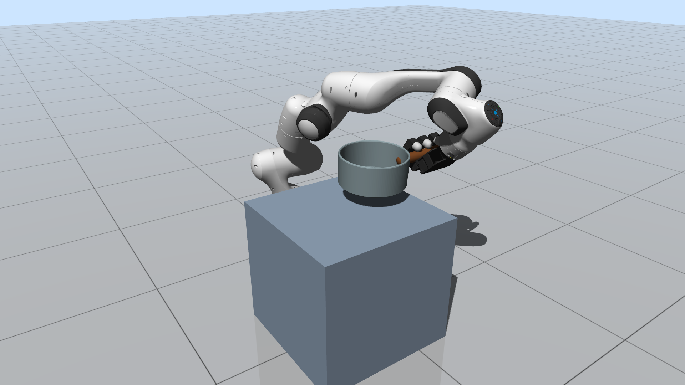
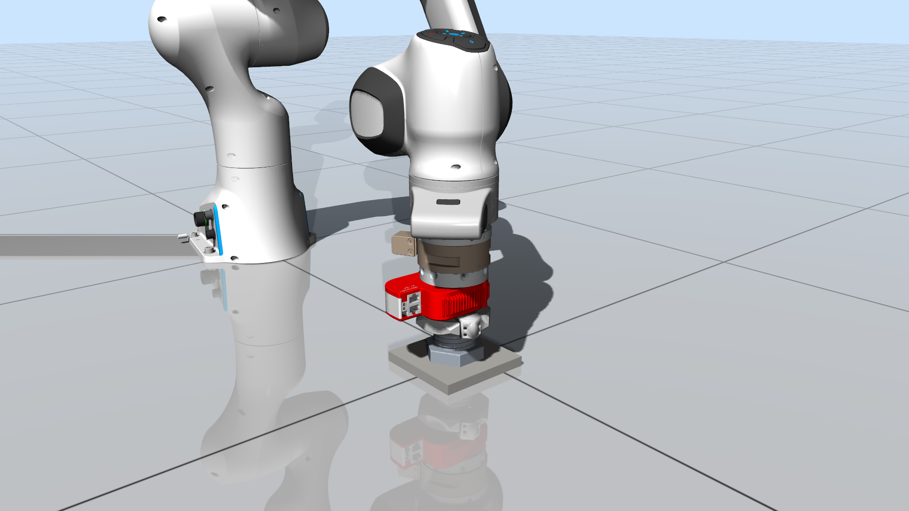

Dense Contact
Designed for scenarios where many contacts appear, vanish, and couple through robot and object dynamics.
Project Page
Contact-Rich Robotic Simulation Platform with Extensive Geometries and Contact Solvers.
Designed for scenarios where many contacts appear, vanish, and couple through robot and object dynamics.
Supports meshes, SDFs, and differentiable support functions for contact tasks that need more than simple primitives.
Connects simulation releases with examples and references for reproducible robotics research.


CRISP builds on research in multi-contact simulation, subsystem-based ADMM, differentiable contact features, and smooth convex collision detection.
See the repository README for the current citation list and release package information.